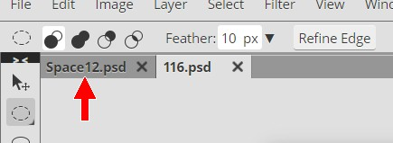
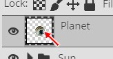
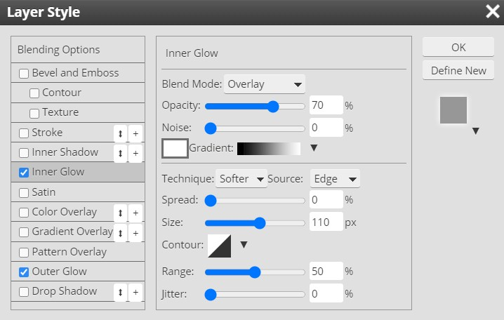

|
PART II:
The Space Scene |
|
Step 13: Planet One |
|
For our first planet, we will cheat a little and create our fictitious
world from an existing satellite photo. I have a selection of photos for you
to choose from so you don't have to worry about finding your own image.
Before we get started, keep the following in mind:
YOUR PLANET SHOULD REMAIN
SELECTED FROM DIRECTION 15 THRU DIRECTION 70. IF YOU HAPPEN TO DESELECT YOUR
PLANET, YOU CAN RESELECT IT BY PRESSING AND HOLDING THE Ctrl KEY AND CLICKING
ON THE PLANET LAYER'S THUMBNAIL
(the little picture between the eyeball
and the layer name)
The first thing to do is select the satellite image you want to use to
create your planet.
- Open your Space12 file in Photopea
- Click
File then click Open...

-
Go to the folder that contains these directions and go into
the subfolder named planet
- Click the More Options drop-down arrow...
and choose Extra large icons...
This will give you a good look at all
of your image choices
There are 125 satellite images for you to choose
from and each will create a different, unique planet, so choose wisely.
|
I have provided you with an alternative method if you wish
to look at the images on a web page to compare them.
Use the link below to open a page will all 125 images included.
Select the image you like and right-click it and choose Save image as...
(or whatever the equivalent is for the browser you are using)
and save the image to your folder and then open it using File - Open in
Photopea.
Satellite image
page |
Take a few minutes and look through the images and find something that you
really like. Let me warn you that many students will simply use the first (or
last) image for no other reason than the fact that it is the first (or last)
on the list. I would advise against this. You want to create a unique space
scene, and if your planet looks identical to 20 other student's planets then
your scene will not look very unique. If you want to use the first (or last)
image, make sure you are using it because you really like it and not because
you are too lazy to look through the images.
- When you find an image you like, double-click it to open it in Photopea
- Click the Ellipse Select tool
- Make sure the Feather is set to 0...
- Press and hold the Shift key so you
get a perfect circle, then click and drag to create a circular
selection on an area of the image that you like and want to turn into your
planet - keep in mind that the larger the selection the better your
resulting planet
will be as this will
give your planet more detail in the end; the example we will use in this
tutorial
is shown below...
Note that the circular selection area is indicated by the red arrow
above
If your circle is not in a place that you like after you draw it, you can
always drag it around and reposition it. Just make sure that your cursor is the
4 headed arrow that you see above.
- Once your circle is where you want it, press Ctrl+C to copy the selection
- We need to switch back to our Space12 file, so look just below the
Options bar and locate the open file names and click the Space12.psd file...

- Press Ctrl+V to paste the planet - notice that Photopea
places the image on a new layer...

- Return to the satellite image and close the file - Photopea will
give you this message...
Click OK and the image will close
- Return to your space scene image and rename the new layer Planet1
- Make sure all of your layer folders are locked - you should now have something like this...
- Once again we want to turn our flat image into an image that looks round
- press and hold the Ctrl key on the keyboard and click on the layer's thumbnail image
- this will select all of the non-transparent pixels on the layer (in this
case, it will select the planet)...

- Click Filter then point at Distort and click Spherize
- Set the Amount to 100% and click OK
If your planet just suddenly doubled in size or changed into some strange oval
or other non-round
shape then you did not have the planet selected when you applied the Spherize
filter. Undo the Spherize and go back to direction 15 and do it right.
- Take a look at your planet and determine if you are happy with how
spherical it looks - if not, repeat the Spherize, but turn down the Amount
(most of you will want the second Spherize to be applied with the Amount set to 50%)...

When you are happy with how spherical your planet looks, move on to the next
direction
Satellite photos are 2d images and thus don't offer any contour to the
planet's surface, so let's use a little Photopea magic to give our planet the
illusion of some raised (like cliffs) and sunken (like valleys) areas.
- Duplicate the Planet1 layer and rename the duplicate layer
Surface...
- Lock the Planet1 layer
- Select the new Surface layer (it should be highlighted in gray as
in the image above) and click Filter and then click Filter Gallery...
This will open the Filter Gallery window...
- In the Filter Selector drop-down menu, choose
Bas Relief...
This filter makes your image seem as though it has texture
[or raised areas], or in this case that your planet has mountains and
valleys
A relief sculpture is one where the subject looks as though it has been
raised out of the background...
Now, obviously the two horsemen were not raised out of the stone background
behind them. Relief sculptures are accomplished by removing material from the
top down and leaving the subject behind. And just to totally cover the topic
here, the 'Bas' in Bas Relief comes from the French word for low, so Bas Relief
literally refers to a piece with a subject slightly raised above the background.
That is exactly what we are going for here - a slight rise from the background.
Keep going and you will see just how this filter will impact our planet.
- Adjust the setting so they resemble those below...
Your image should look something like this...
Since you are using a different image than me, yours will obviously not look
exactly like mine. You do not even have to use the exact same settings as I did.
You can adjust them to whatever you
like, but be careful that the degree of Bas Relief you have resembles the degree
in the above image. Any more or less and your image will not turn out
correctly.
- Click OK
- Change the blending mode (remember that the blending mode is on
the Layers panel just to the left of Opacity) of the Surface layer to one of the
following...
Which you choose is up to you, so test each and choose one that causes your
land to appear as though it actually has height and texture; I'm going to
use Overlay...
Don't worry if it seems really bold - we will decrease the Opacity of the
Surface layer next to get it looking good
- Lower the Opacity of the Surface layer to something that looks good with
your image - I'm going to go with a setting of 50%...
So that my image now looks like this...
Let's compare my planet before the Bas Relief filter and after...

Notice that areas of shadows have been added - I put in some red arrows so
you can see the difference more clearly - that resemble mountains and valleys.
These areas add dimension to the planet and give the mountains and coastline
contour. The effect is subtle, but this is what we are going for so
that when we
add some clouds in the next direction, our image will have some depth to
it.
- If you are happy with your Surface layer, lock the Surface layer
(if you are not happy, you can always undo your work and try using a
different blending mode or various Opacity settings)
- Insert a new layer at the top of your layer stack and name it Clouds1...
- Make sure the Clouds1 layer is selected
- Press D on the keyboard
- If your planet is not selected, make a selection by Ctrl+clicking on the
Planet1 layer thumbnail
- Fill the CIRCULAR selection with black
- Click Filter then point at Render and click Clouds
- Click Filter then point at Distort and click Spherize
- Make the Amount 100%
- Click OK
- Change the blending mode of the Clouds1 layer to Hard Light
- you should now have a gentle covering of clouds...

- Lock the Clouds1 layer
- Insert a new layer at the top of the layer stack and name it Clouds2
- Press D on the keyboard to set black as the Foreground color
- Fill the CIRCULAR selection with black
- Click Filter then point at Render and click Clouds
- Click back on Filter then point at Render and click Difference
Clouds
- Press Ctrl+Alt+F several times until you have a cloud pattern you like -
it should have large amounts of dark areas in it
- Click Filter then point at Distort and click Spherize
- Make the Amount 100%
- Click OK
- Change the blending mode of the Clouds2 layer to Screen
(also give Linear Dodge and Hard Light a try and see which of the
three you
like best) - you should now have a covering of both light and dark clouds...

- Lock the Clouds2 layer
Now let's give our planet a nice shadow so that it looks like our sun is only
shining on one side of the planet.
- Insert a new layer at the top of the layer stack and name it
Shadow (leave it selected!)
- Fill the round selection with black
- Select the Eraser Tool
- Set the Brush to Soft Mechanical 24 pixels and adjust the Size to 500...
- Press the Esc key to remove the Brush options pop-up window and compare
the 500 pixel sized brush to the actual size of your planet - adjust the size of your brush
(the [ key will decrease the brush size while the ] key will increase the
brush size) so that it is slightly larger than your
planet (see the image below)
- Position your cursor over your planet similar to the image below...
Remember that you want to erase the black from the side of your planet
closest to your sun and leave the other side in shadow
- Click the mouse button several times to Erase the portion of the Shadow layer so that the planet shows
through on the side toward the sun (be careful not to erase too much
of the shadow) - you should now have something similar to the image below...

Not a bad looking planet if you ask me :-)
It is pretty common at this point for students to erase too much of the
shadow. Don't worry, this is just because you are not used to working with
such a large Eraser in Photopea. If you remove too much shadow, just use Ctrl+Z to undo and try again. Your
shadow should look very similar to mine when you are done.
- Lock the Shadow layer
To add a little more realism to our planet, let's put a soft glow around
the edge to simulate the glow seen when sunlight reflects off the atmosphere.
- Insert a new layer at the top of the layer stack and rename it
Atmosphere
- Fill the round selection with black
- Change the blending mode of the Atmosphere layer to Screen...
- Double-click the Atmosphere layer to open the Layer Style window
- Click the Outer Glow checkbox and set all of the options to match the
following image...
Helpful hint: a quick and easy way to set the color to white (the tiny red
arrow above), is to click that color box and in the Color Picker that opens
simply enter ffffff for the Hex setting field...
ffffff is the Hex code for white (you're welcome)
- Click the Inner Glow checkbox and set all of the options to match the
following image...

- Click OK - you should now have an image and layers similar to the image
below...
Note that if your Layers panel looks like this...
You simply need to click the black menu arrow (pointed at with the red arrow
above) to expand the layer and see the applied Effects (the tiny litte eff
on the layer is there to let you know that Effects have been applied)
We now need to get rid of the glow on the shadow side of the planet.
Unfortunately, we can't just grab the Eraser Tool and erase the glow because
it is not actually on the Atmosphere (remember that it is actually an effect
being applied to the black circle that is actually on the Atmosphere layer).
We need to convert the Atmosphere layer from a layer with an effect applied to
it to a regular layer. To do this, we will merge the Atmosphere layer with a
regular blank layer (this is a secret trick used by Graphic Designers...shhhhh,
don't tell anyone).
- Insert a new layer (just leave it named whatever Photopea names
it) and make sure it is at the top of the layer
stack
- Select both the new layer you just created and the Atmosphere
layer (select the new layer then press and hold Shift as you click the
Atmosphere layer)
- Press Ctrl+E to have Photopea merge the two layers
- don't freak out that it is no longer named Atmosphere, remember that when
you merge layers that Photopea gives the newly merged layer the name of
whatever layer was on top when you merged them
- Rename the newly merged layer back to Atmosphere - your planet
should now look similar to the image below...

The selection is filled with black again because the blending mode of the new
Atmosphere layer is no longer Screen (blending modes are always removed when
you merge layers)
- Change the blending mode of the Atmosphere layer back to Screen
- Deselect your circle by pressing Ctrl+D
- Move the Shadow layer above the Atmosphere layer
(in other words, put Shadow at the top of the layer stack) - your planet
should now look similar to this...

Our Atmosphere layer is now just a regular, every day layer. Let's erase
the glow from the shadow side.
- Click the Eraser Tool
- Make the Atmosphere layer the active layer (Atmosphere and NOT
Shadow)
- Use the same settings for the Eraser that you used in direction 53 and erase
the glowing atmosphere from the shaded side of the planet - you should now have a planet similar to the one below...

Our planet now has a nice atmospheric glow, but there is a problem. Notice
the thin,
white border around the shadow side of my planet in the above image. The border of your planet
may be as visible as the border around my planet above, or it may be
harder to see, but it is there (this border exists because all of the layers we
have added above our initial Planet layer are just a tiny bit smaller than our planet).
To fix this little issue we will simply increase the size of our clouds,
atmosphere, and shadow layers a small amount.
- Make the Shadow layer the active layer (this should be the top layer in
your layer stack) and press and hold the Shift key then click the Clouds1
layer - this should select the top four layers of your layer stack...
- Click the Lock all icon to unlock all of the selected layers...
- Click Edit on the Menu Bar and point at Transform then click
Scale...
to activate the scale resize handles around the image...

- On the Scale options bar, click the Keep Aspect Ratio button...
this will cause Photopea to change the height of our selection by the same
amount that we are about to change the width
- Double-click in the Width box...
- Type 101...
- Click the checkmark at the end of the options bar...
This will apply the rescale - the thin, white border should now be
gone...
At this point, let's take a quick second and make sure that we are happy
with our planet. Depending on how the cloud filter applied clouds to your
planet, your cloud cover is either perfect or a little too thick. Let's run a
quick test to see if we need to adjust our cloud layers.
- Turn the Opacity of your Cloud1 and Cloud2 layers
down to 50%
Take a look at the image below...

Notice that the difference between 100% Opacity and 50% Opacity on my
planet is not huge (note that in the 50% planet you can see additional
mountains near the top of the planet and the cloud cover over the ocean is
diminished). The lower the Opacity on the cloud layers the more visible your
surface features will be. I'm not going to tell you what Opacity setting to
use on your planet - you get to decide that for yourself.
- Determine what level of cloud Opacity you want for your planet and set
your Opacity - note that you can set any level of Opacity you wish (you
could even set the two layers to different Opacity, so if you think Cloud1
should be set to 60% and Cloud2 should be set to 80%, then go for it), just
DO NOT fall below 50% Opacity for each level
Now that our planet is complete, let's move all of our planet layers into a
layer group so we can adjust its size and reposition it in our scene.
- Make sure all 6 layers that make up your planet are unlocked
- Select all six of the layers that make up your planet...
- Click
the New Folder icon - this should place all of your layers into a
layer folder
- Rename the new layer folder Planet1...
- Turn on the visibility of all of your layer groups
- Click Edit then point at Transform and click Scale
and resize your planet to something more in scale with your sun (remember to
hold the Shift key and use one of the planet's corner resize handles
to resize your planet so it does not turn out egg shaped, which will cost
you points)
- Lock the Planet1 layer group
With all of your layer groups and layers turned on, you should now have a space
scene similar to the one below...

The really great part about this process for building a planet is that you
do not have to start with a satellite photo. You can use a hand-drawn image, a
photograph of any unique object, or even a unique pattern or brush stroke to
make a planet with a distinct surface.
For our second planet, we are going to start from scratch and create a Saturn-like world complete
with rings.
- Click File and then click Save as PSD
- Name the file Space13
01 |
02 |
03 |
04 |
05 |
06 |
07 |
08 |
09 |
10 |
11 |
12 | 13 |
14 |
15 |
16 |
17 |
18 |
19 |
20